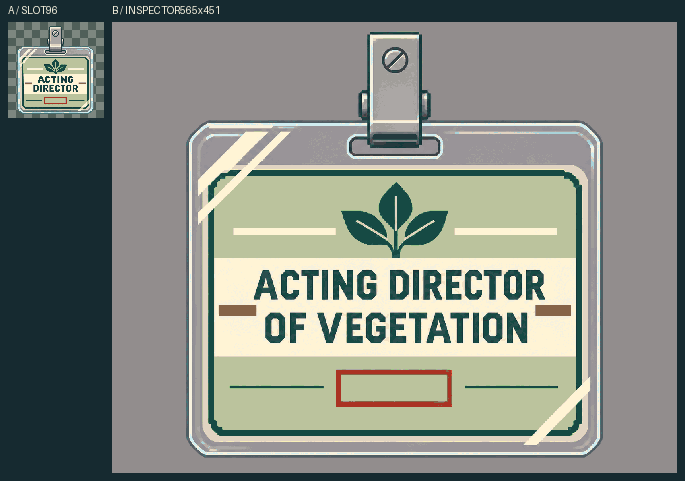
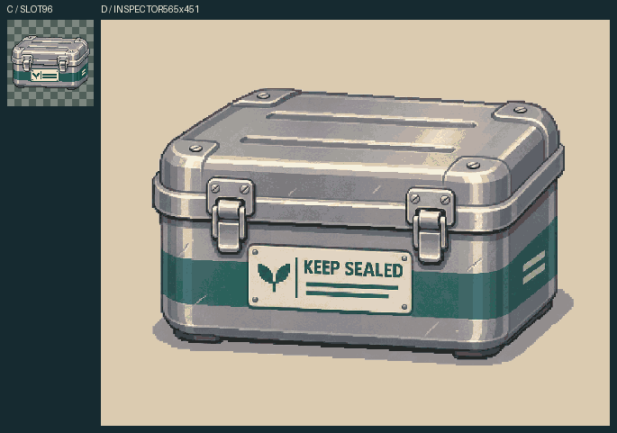
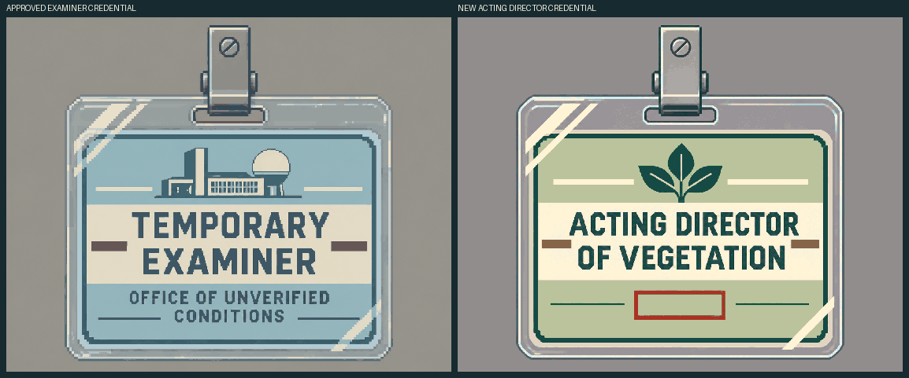
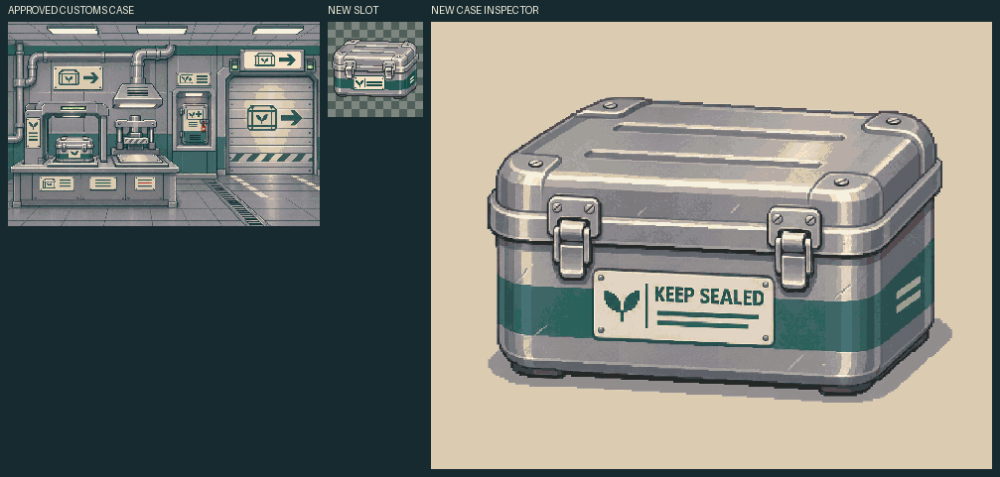
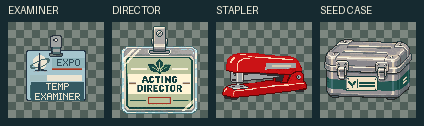
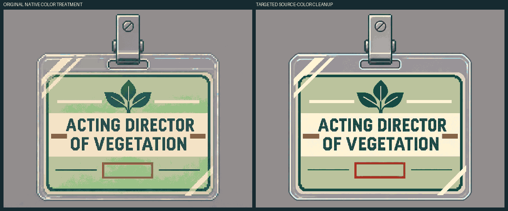
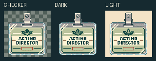
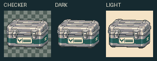

The Acceptable Error / Chapter2 / Batch6 / November17,2026
Credentials and courier cargo.
Four generated candidates · Art Director review pending
Batch5 is finally owner-approved and registered. All96 selected public-art hashes have been verified. These four new item candidates remain generated and unselected; all earlier approved pixels are unchanged.
Slots are transparent RGBA96×96; inspectors are opaque RGB565×451. Exact4× review enlargements are384×384 and2260×1804. Inspector views are separate generations, not enlarged inventory icons. Detailed originals and exact prompts are preserved.
A / RGBA 96×96 / generated, unselected
Acting Director — inventory
items:acting_director_badge#slot
Pale-green emergency credential: attached silver clip, three-leaf emblem, shortened ACTING DIRECTOR title and unlettered authorization stamp. Real binary alpha on96×96.
The independently authored565×451 inspector shows the complete ACTING DIRECTOR OF VEGETATION title. A targeted source-color cleanup reduces paper grain; the original remains preserved.
The sealed rounded-rectangular cargo case at inventory size: two secured front catches, bevelled lid, teal band and leaf label. Real binary alpha; no escaped contents.
A detailed independent view of the same closed silver/teal case established by the approved Customs scene. KEEP SEALED is readable; no rupture, germination or later outcome.
The pale-green card belongs to the approved credential family. The sealed cargo case follows the approved rounded-rectangular Customs container. The owner’s explicit shape direction takes precedence over older cylinder wording in the item prose, which remains unchanged.

Acting Director: independent slot and inspector variants

Certified cargo: independent slot and inspector variants

Approved Examiner credential → new Acting Director credential

Approved Agricultural Customs container → new slot → new inspector

Approved slot presentation beside the new item icons

Preserved first native inspector → targeted source-color cleanup
True transparency / native margins
Inspect the inventory masks
The two slot sources have genuine transparency. The established processing samples their alpha with NEAREST, thresholds at128, crops transparent padding and fits the intact object within88×88 on a96×96 canvas. Final alpha is strictly0/255; hidden RGB is zero.

Acting Director credential on checker, dark and lightActing Director credential native binary alpha: white = object

Certified seed case on checker, dark and lightCertified seed case native binary alpha: white = object
Evidence / provenance / handoff
Technical and visual review
Existing palette, no dithering. Small icon detail and inspector surface modeling remain visual-review questions; technical checks do not establish approval.
The first badge inspector’s source texture became conspicuous after native palette mapping. A targeted built-in source-color edit simplifies the paper/background treatment while preserving identity and title. Both raw generations, exact prompts and first native exports remain preserved.
Native slot and inspector PNGs are the future integration handoff. No production paths or gameplay integration are assigned. Focus dimensions and death-screen specifications remain unchanged; Batch7 has not started.